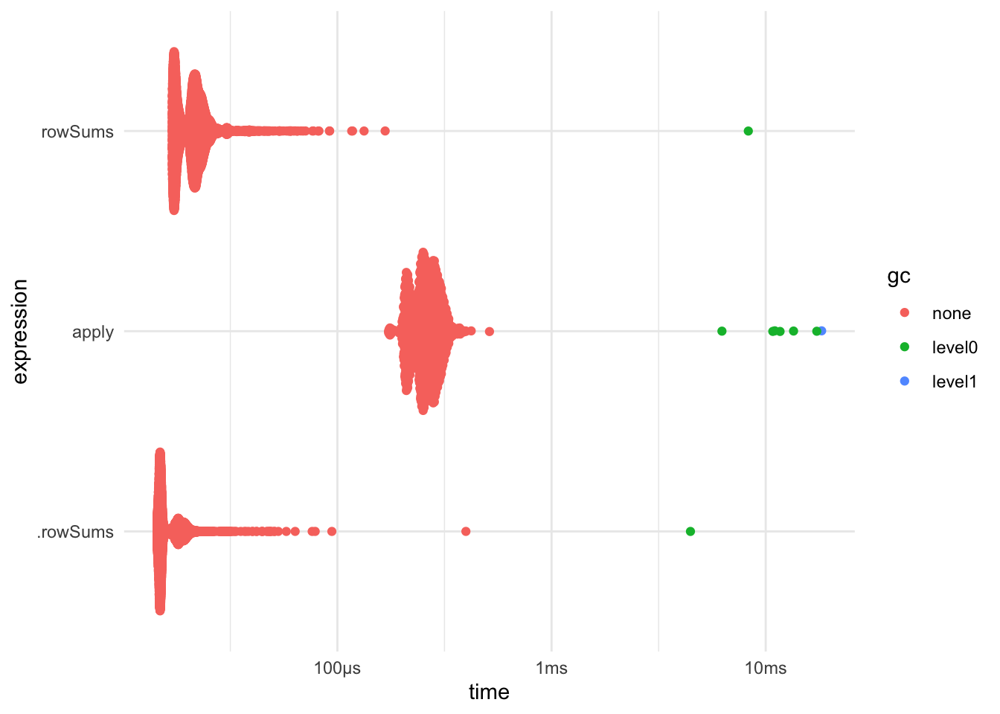
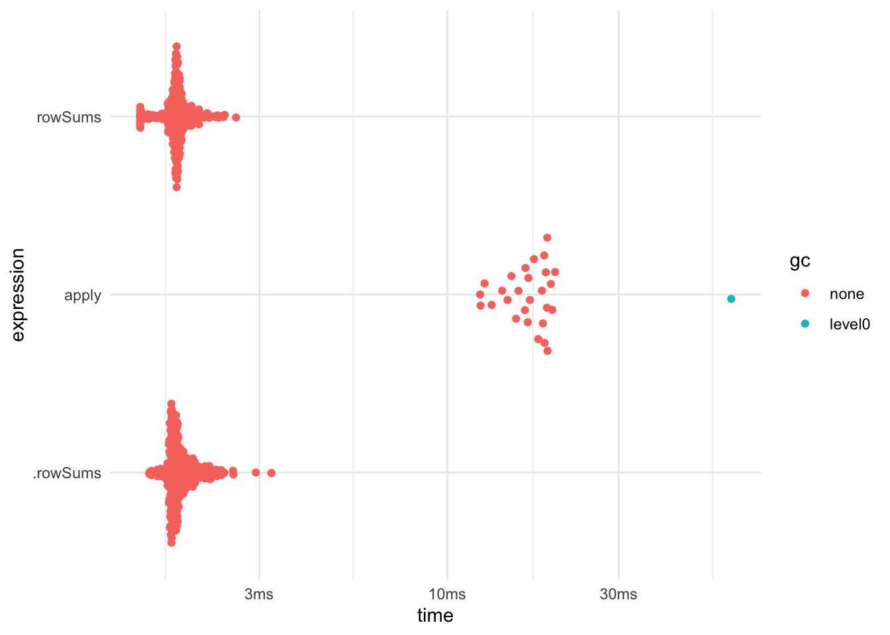
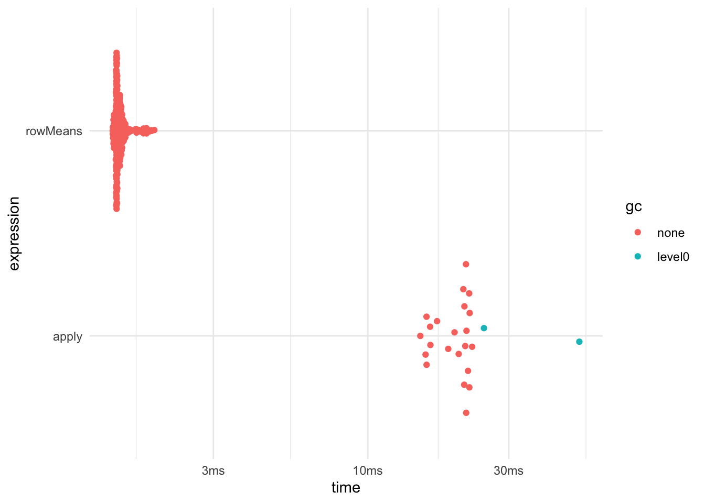
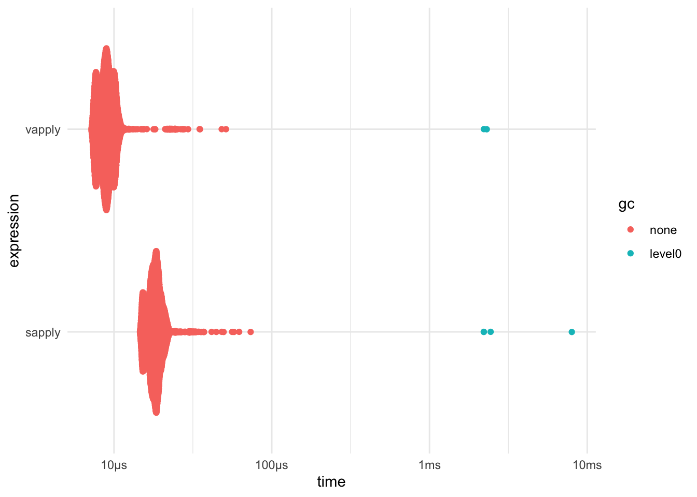
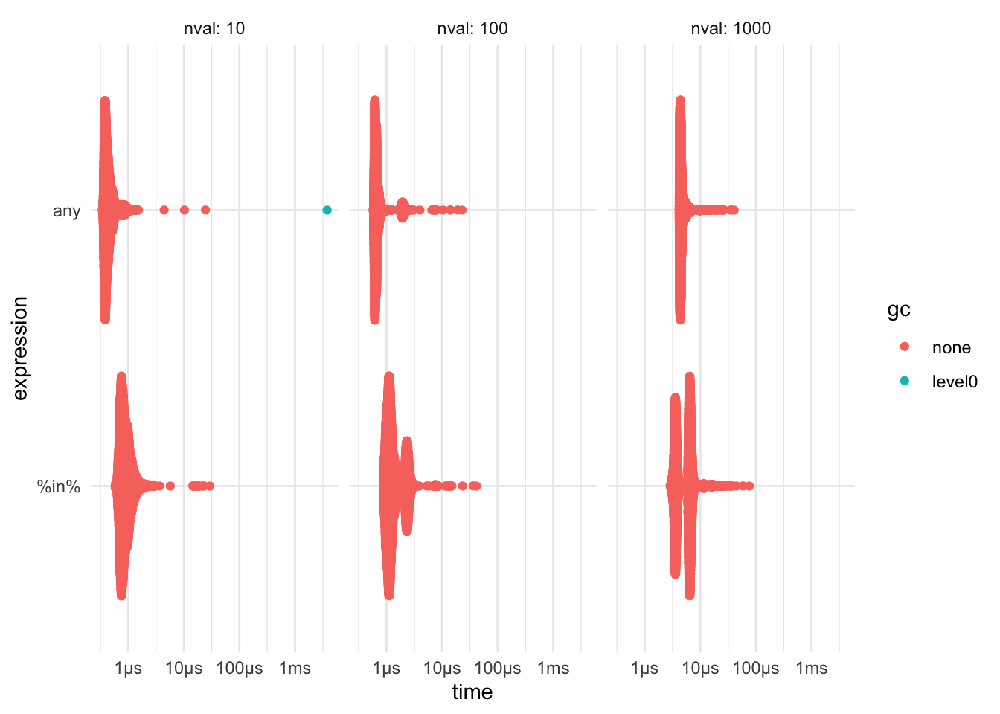
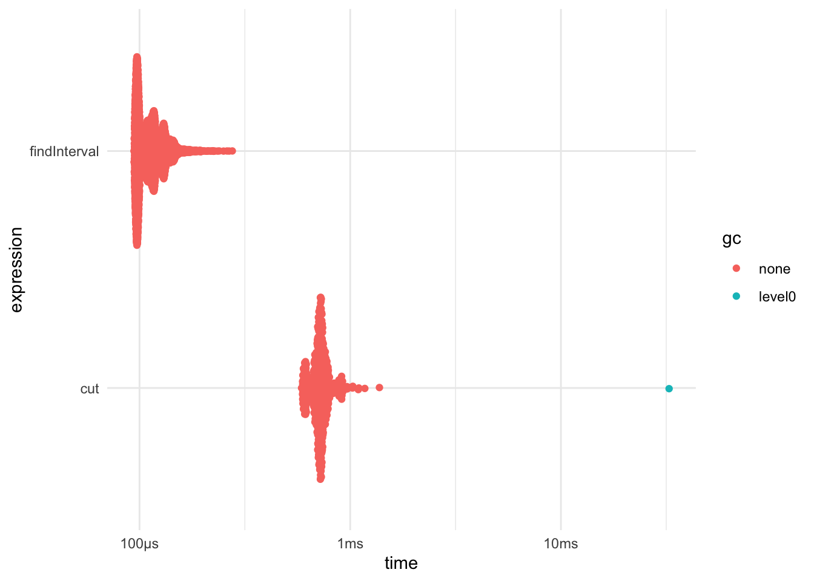
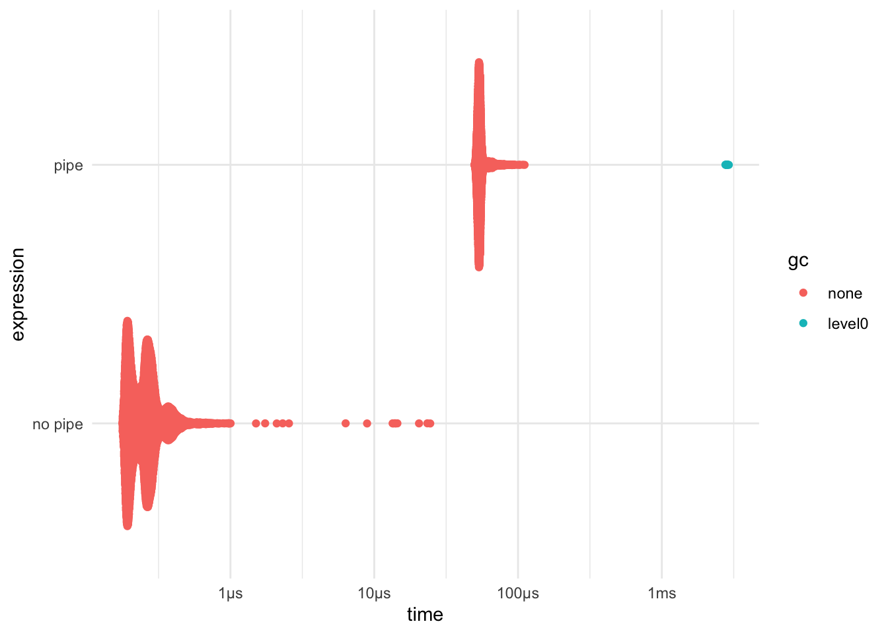

This document serves as a starting point for code optimizations. It includes possible optimization strategies.
All code here is being benchmarked using the bench package.
Imagine you have a matrix of numbers and you want to compute the row-wise variance. This can be done using a for loop or using the apply function. You will most likely not see any big speed improvements, but the lines of codes can sometimes be considerably be improved.
data <- matrix(rnorm(100000), nrow = 1000)
rowVars <- function(x) {
x_length <- nrow(x)
res <- numeric(x_length)
for (i in seq_len(x_length)) {
res[i] <- var(x[i, ])
}
res
}
bench::mark(
rowVars = rowVars(data),
applt = apply(data, 1, var)
)## # A tibble: 2 x 6
## expression min median `itr/sec` mem_alloc `gc/sec`
## <bch:expr> <bch:tm> <bch:tm> <dbl> <bch:byt> <dbl>
## 1 rowVars 8.01ms 9.26ms 107. 1.3MB 53.4
## 2 applt 8.48ms 8.88ms 112. 2.02MB 49.4If you are about to use apply() with FUN = mean or sum() you might take a look at rowSums(), colsums(), rowMeans(), and colMeans(). They will do the same but faster (NaN and NA are handled slightly differently to tread lightly). the .rowSums() is a faster variant that only works on numeric matrices and does not name the result.
data <- matrix(rnorm(10000), nrow = 100, ncol = 100)
bench::mark(
apply = apply(data, 1, sum),
rowSums = rowSums(data),
.rowSums = .rowSums(data, 100, 100)
) %>% plot()## Loading required namespace: tidyr
data <- matrix(rnorm(1000000), nrow = 1000, ncol = 1000)
bench::mark(
apply = apply(data, 1, sum),
rowSums = rowSums(data),
.rowSums = .rowSums(data, 1000, 1000)
) %>% plot()

bench::mark(
sapply = sapply(mtcars, sum),
vapply = vapply(mtcars, sum, FUN.VALUE = numeric(1))
) %>% plot()
If you want to see if a vector contains a value, using any(data == 10) can be faster then 10 %in% data. The speed will depend on the length of your vector and how frequent the value is.
bench::press(
nval = c(10, 100, 1000),
{
data <- rpois(nval, 1)
bench::mark(
`%in%` = 5 %in% data,
any = any(data == 5)
)
}
) %>% print() %>% plot()## Running with:
## nval## 1 10## 2 100## 3 1000## # A tibble: 6 x 14
## expression nval min median `itr/sec` mem_alloc `gc/sec` n_itr n_gc
## <bch:expr> <dbl> <bch:tm> <bch:tm> <dbl> <bch:byt> <dbl> <int> <dbl>
## 1 %in% 10 585ns 840ns 1074279. 0B 0 10000 0
## 2 any 10 340ns 416ns 2145902. 0B 215. 9999 1
## 3 %in% 100 873ns 1.16µs 698216. 1.27KB 0 10000 0
## 4 any 100 576ns 649ns 1270306. 448B 0 10000 0
## 5 %in% 1000 2.87µs 6.22µs 181803. 11.81KB 0 10000 0
## 6 any 1000 4.16µs 4.45µs 212138. 3.95KB 0 10000 0
## # … with 5 more variables: total_time <bch:tm>, result <list>, memory <list>,
## # time <list>, gc <list>
Many times when you want to use cut(), to split a vector into bins, it will be faster to replace cut with findInterval as it does less work by not creating a factor.
x <- rnorm(10000)
bench::mark(check = FALSE,
cut = cut(x, c(-Inf, 0, Inf)),
findInterval = findInterval(x, c(-Inf, 0, Inf))
) %>% print() %>% plot()## # A tibble: 2 x 13
## expression min median `itr/sec` mem_alloc `gc/sec` n_itr n_gc
## <bch:expr> <bch:t> <bch:> <dbl> <bch:byt> <dbl> <int> <dbl>
## 1 cut 555.1µs 641µs 1534. 273.7KB 2.09 734 1
## 2 findInterval 93.7µs 109µs 9158. 46.3KB 2.15 4264 1
## # … with 5 more variables: total_time <bch:tm>, result <list>, memory <list>,
## # time <list>, gc <list>
unlist() can be sped up by setting use.names = FALSE, this will stop the returned object from being names, saving time.
bench::mark(check = FALSE,
`use.names = TRUE` = unlist(mtcars),
`use.names = FALSE` = unlist(mtcars, use.names = FALSE)
)## # A tibble: 2 x 6
## expression min median `itr/sec` mem_alloc `gc/sec`
## <bch:expr> <bch:tm> <bch:tm> <dbl> <bch:byt> <dbl>
## 1 use.names = TRUE 47.72µs 49.76µs 19521. 5.59KB 0
## 2 use.names = FALSE 2.21µs 2.74µs 354253. 2.8KB 35.4If you have any mathematical calculations you need to have done, it is worth your time to check if they are implemented in R already ?Math.
Here we have some object which could be a vector, matrix, or array. we would like to know how many times the number 0 appears.
x_vector <- rpois(10000, 1)
bench::mark(
table = unname(table(x_vector)["0"]),
sum = sum(x_vector == 0)
)## # A tibble: 2 x 6
## expression min median `itr/sec` mem_alloc `gc/sec`
## <bch:expr> <bch:tm> <bch:tm> <dbl> <bch:byt> <dbl>
## 1 table 540.4µs 663.3µs 1483. 683KB 4.78
## 2 sum 24.9µs 27.3µs 33095. 39.1KB 3.31If you need counts of integer-valued vectors, you will gain a big speedup by using the tabulate() function. Notice that tabulate() will ignore non-positive integers, so 0s would not be counted. tabulate will manually place the number of counts of 8 in the 8th place in its output.
## x
## 1 2 3 4 5 6 7 8 9 10
## 96 105 104 96 90 104 85 106 105 109## [1] 96 105 104 96 90 104 85 106 105 109## # A tibble: 2 x 6
## expression min median `itr/sec` mem_alloc `gc/sec`
## <bch:expr> <bch:tm> <bch:tm> <dbl> <bch:byt> <dbl>
## 1 table 116.1µs 139.18µs 7086. 63.3KB 6.48
## 2 tabulate 3.4µs 4.41µs 226171. 0B 22.6The use of the pipe operator %>% can make your code more readable, but it will also result in (slightly) slower code. If speed is very important you might want to reconsider using pipes. This will be a trade-off between readability and speed.
library(magrittr)
x <- rpois(1000, 1)
bench::mark(
`pipe` = x %>% identity(),
`no pipe` = identity(x)
) %>%
print() %>%
plot()## # A tibble: 2 x 13
## expression min median `itr/sec` mem_alloc `gc/sec` n_itr n_gc total_time
## <bch:expr> <bch:t> <bch:t> <dbl> <bch:byt> <dbl> <int> <dbl> <bch:tm>
## 1 pipe 49.7µs 53.8µs 18219. 280B 16.8 8692 8 477.07ms
## 2 no pipe 177ns 254ns 3616693. 0B 0 10000 0 2.77ms
## # … with 4 more variables: result <list>, memory <list>, time <list>, gc <list>
If you need to calculate the Matrix cross product then it is usually faster to use crossprod() then use the t(x) %*% y
x <- matrix(rnorm(1000), ncol = 1)
w <- matrix(rnorm(10000), ncol = 10)
bench::mark(
`%*%` = t(x) %*% w,
`crossprod` = crossprod(x, w)
)## # A tibble: 2 x 6
## expression min median `itr/sec` mem_alloc `gc/sec`
## <bch:expr> <bch:tm> <bch:tm> <dbl> <bch:byt> <dbl>
## 1 %*% 18.1µs 18.8µs 50268. 7.86KB 5.03
## 2 crossprod 13.6µs 13.9µs 70400. 2.23KB 0pmin is a nice shorthand, but you can gain some speed with some rewriting.
## # A tibble: 2 x 6
## expression min median `itr/sec` mem_alloc `gc/sec`
## <bch:expr> <bch:tm> <bch:tm> <dbl> <bch:byt> <dbl>
## 1 pmin 6.92µs 8.64µs 108557. 7.86KB 10.9
## 2 rewrite 3.16µs 5.71µs 185785. 17.07KB 0If you are doing linear regression, and you already have the data as matrices you can benefit greatly from using the .lm.fit() function. This function will not do any checking for you. Just the calculations.
y <- mtcars$mpg
x <- as.matrix(mtcars[, c("disp", "cyl")])
bench::mark(check = FALSE,
lm = lm(mpg ~ disp + cyl - 1, mtcars),
.lm.fit = .lm.fit(x, y)
)## # A tibble: 2 x 6
## expression min median `itr/sec` mem_alloc `gc/sec`
## <bch:expr> <bch:tm> <bch:tm> <dbl> <bch:byt> <dbl>
## 1 lm 417.53µs 450.52µs 2161. 5.36KB 12.5
## 2 .lm.fit 2.65µs 3.08µs 292855. 3.99KB 0Creating a sequence from 1 to n.
n <- 100000
bench::mark(
seq = seq(1, n),
seq.int = seq.int(1, n),
`:` = 1:n,
seq_len = seq_len(n)
)## # A tibble: 4 x 6
## expression min median `itr/sec` mem_alloc `gc/sec`
## <bch:expr> <bch:tm> <bch:tm> <dbl> <bch:byt> <dbl>
## 1 seq 3.63µs 4.42µs 225948. 0B 22.6
## 2 seq.int 222ns 289ns 3254642. 0B 0
## 3 : 108ns 124ns 6954630. 0B 0
## 4 seq_len 94ns 107ns 7660359. 0B 0Not only is seq_len() faster, but it is also safer as it works well when n = 0.
## [1] 1 0## integer(0)